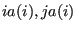
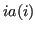
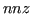
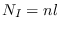

Next: psb_cdasb Communication
Up: Data management routines
Previous: psb_cdall Allocates
Contents
call psb_cdins(nz, ia, ja, desc_a, info [,ila,jla])
call psb_cdins(nz,ja,desc,info[,jla,mask,lidx])
This subroutine examines the edges of the graph associated with the
discretization mesh (and isomorphic to the sparsity pattern of a
linear system coefficient matrix), storing them as necessary into the
communication descriptor. In the first form the edges are specified as
pairs of indices ; the starting index  should
belong to the current process.
In the second form only the remote indices  are specified.
- Type:
- Asynchronous.
- On Entry
-
- nz
- the number of points being inserted.
Scope: local.
Type: required.
Intent: in.
Specified as: an integer value.
- ia
- the indices of the starting vertex of the edges being inserted.
Scope: local.
Type: required.
Intent: in.
Specified as: an integer array of length .
- ja
- the indices of the end vertex of the edges being inserted.
Scope: local.
Type: required.
Intent: in.
Specified as: an integer array of length .
- mask
- Mask entries in
ja, they are inserted only when the
corresponding mask entries are .true.
Scope: local.
Type: optional.
Intent: in.
Specified as: a logical array of length , default .true..
- lidx
- User defined local indices for
ja.
Scope: local.
Type: optional.
Intent: in.
Specified as: an integer array of length .
- On Return
-
- desc_a
- the updated communication descriptor.
Scope:local.
Type:required.
Intent: inout.
Specified as: a structured data of type descdatapsb_desc_type.
- info
- Error code.
Scope: local
Type: required
Intent: out.
An integer value; 0 means no error has been detected.
- ila
- the local indices of the starting vertex of the edges being inserted.
Scope: local.
Type: optional.
Intent: out.
Specified as: an integer array of length .
- jla
- the local indices of the end vertex of the edges being inserted.
Scope: local.
Type: optional.
Intent: out.
Specified as: an integer array of length .
Notes
- This routine may only be called if the descriptor is in the
build state;
- This routine automatically ignores edges that do not
insist on the current process, i.e. edges for which neither the starting
nor the end vertex belong to the current process.
- The second form of this routine will be useful when dealing with
user-specified index mappings; see also 2.3.1.
Next: psb_cdasb Communication
Up: Data management routines
Previous: psb_cdall Allocates
Contents